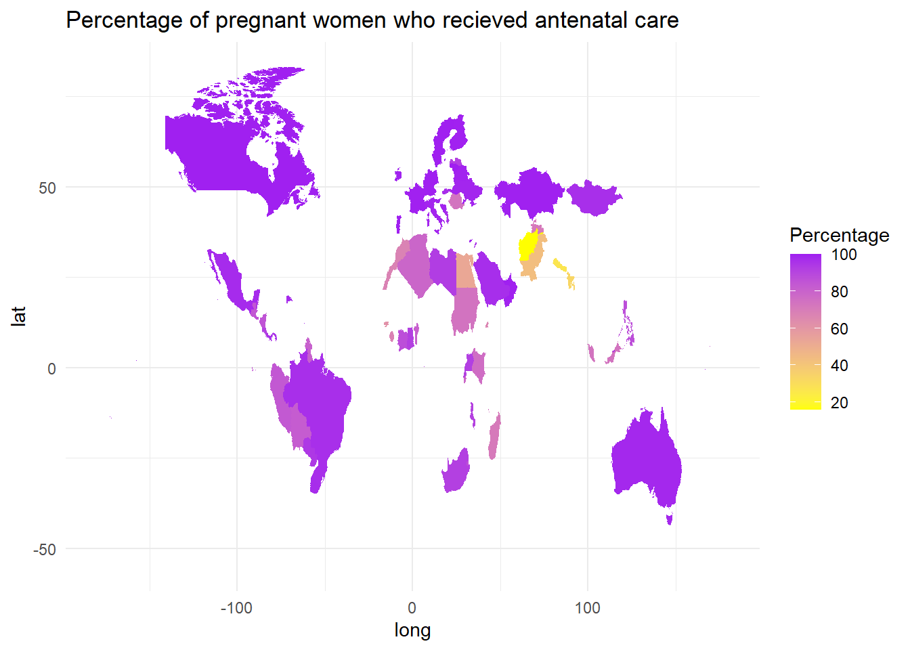
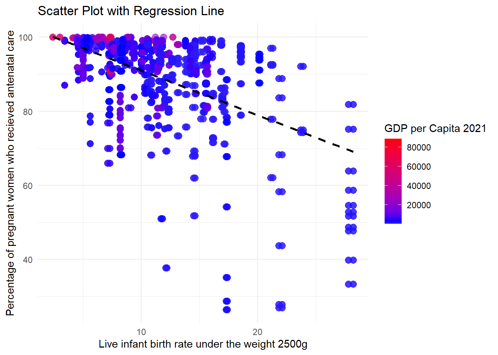
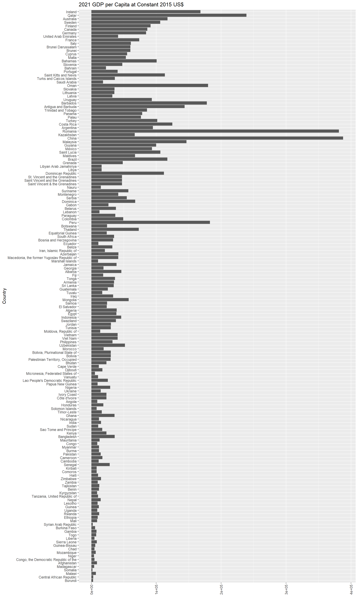

Data Analytics Assignment
Question : Is rate of antenatal care recieved by pregnant women a major factor for infoant mortality rate?
Percentage of pregnant women (aged 15-49 years) who recieved antenatal care atleast once during their pregnancy
The world map shows the percentage of women who recieved antenatal care atleast once during their pregnancy across different countries. Countries with higher percentages are shown in darker shades of red.

Live birth rate of ingfants under the weight of 2500g
The scatterplot illustrates the relationship between live birth rate of infants, GDP rates and the percentage of pregnant women who have recieved antenatal care atleast once during their pregnancy. The linear regression line shows the general trend.

GDP 2021
The bar chart presents the GDP for each country

Conclusion The story of maternal and child healthcare is complex, and it’s crucial to learn about all the developments that have led to today’s high rate of successful pregnancies and childbirths. To better appreciate the difficulties women and children face in different parts of the world, we can examine UNICEF data on antenatal care, low birth weight, population, and GNI. First, we’ll take a look at the birth rate for infants weighing less than 2500 grams and the percentage of pregnant women who receive Antenatal care. Pregnancy complications and lack of Antenatal care are common causes of low birth weight, which is a leading cause of infant mortality. There is a clear need for improved maternal and child healthcare in nations like India, Pakistan, and Nigeria, where the rate of births of infants weighing less than 2500 grams is high, and in nations like Afghanistan, Somalia, and South Sudan, where fewer than 30 percent of pregnant women have access to professional healthcare.
Analysis of mother and child health must also account for population size. Even a small percentage of women not accessing professional healthcare can result in a big number of high-risk pregnancies and deliveries in nations with huge populations. While a sizable fraction of expecting mothers in China have access to Antenatal care, the country’s sheer size presents formidable obstacles to achieving universal parity in maternal and child health. Finally, GNI can be used as a factor in deciding whether or not pregnant women and children have access to healthcare. Healthcare resources, such as skilled healthcare providers, pharmaceuticals, and medical equipment, might be scarce in countries with low GNI. Maternal and child health outcomes can be improved by using GNI alongside other variables to determine which nations require more assistance. Maternal and child health is a multifaceted issue, and any analysis of the problems that women and children face must take all of these into account. Data visualizations that focus on maternal and child health indicators help us learn about the differences between nations, as well as where there may be room for improvement in healthcare delivery, ultimately benefitting women and children everywhere.